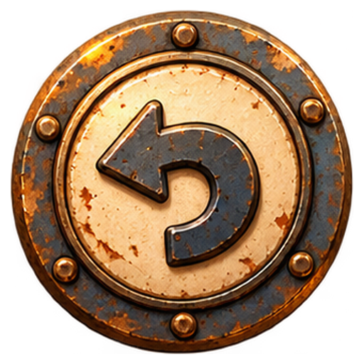
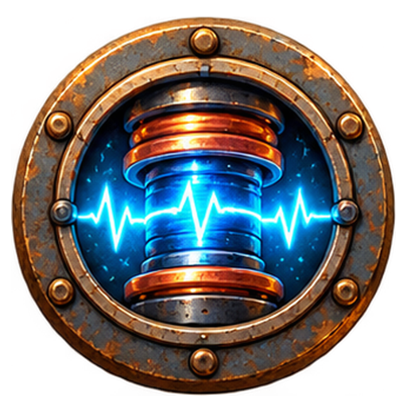
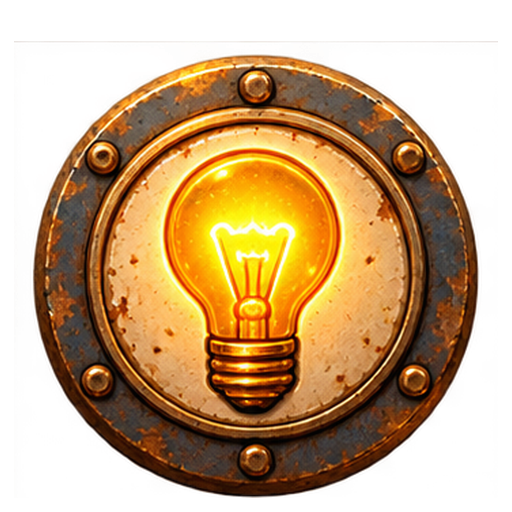

Потяни ряд · Нажми на магнит, чтобы сменить объезд



Доставь роботов в ремонтные гнёзда их цвета одновременно. Роботы остаются на поле и не исчезают.
Потяни ряд или столбец. Клетки замыкаются через край. Магнит удерживает свою клетку, а поток обходит её, сдвигая соседей на всём маршруте.
Нажатие на магнит бесплатно меняет предпочитаемый объезд. Если проход занят другим магнитом, используется свободная сторона.
«Магнит» закрепляет клетку, «Импульс» освобождает её. Инструмент и сдвиг тратят по одному ходу. Заблокированное ремонтное гнездо не засчитывается.
Касание подсвечивает одну клетку. Потяни ряд или столбец: появится фактический маршрут, белый до одного деления и золотой после. Свечение у магнита показывает доступную сторону объезда. Бегущие искры показывают направление, прозрачные роботы — позиции после отпускания.
На ПК: выбери клетку и нажми стрелку. Shift — две клетки, Ctrl — три, Alt — четыре, Ctrl+Shift — пять. Любой шаг можно отменить.
 Запускаем мастерскую…
Запускаем мастерскую…